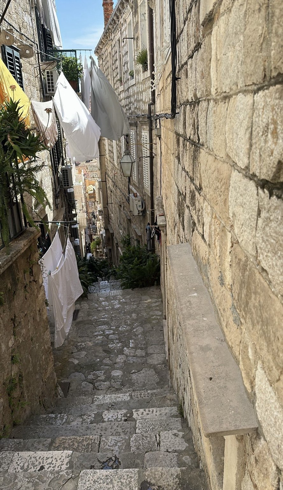
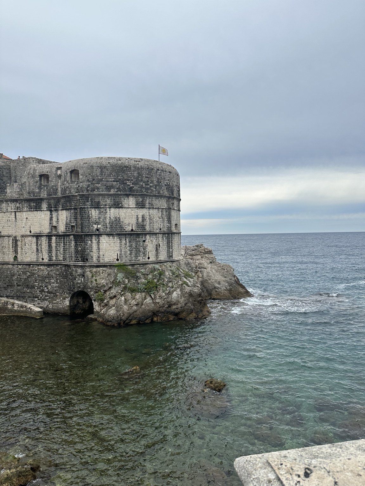
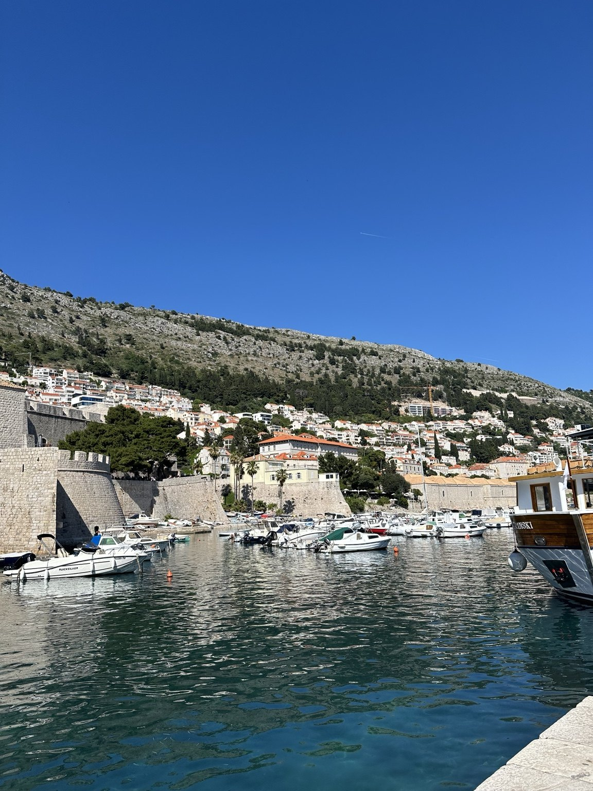

Old Town
The historic center contains stone streets, churches, public squares, cafés, and buildings surrounded by defensive walls.
Dubrovnik's preserved historic center offers visitors a close look at the city's architecture, culture, and maritime past.
The historic center contains stone streets, churches, public squares, cafés, and buildings surrounded by defensive walls.
A walk along the walls provides views of rooftops, the harbor, the coastline, and the Adriatic Sea.
This fortress stands above the water and reflects Dubrovnik's long history of protecting its coastline.
The table below helps travelers estimate how much time to allow for several popular experiences.
| Attraction | Category | Suggested Time | Best For |
|---|---|---|---|
| Old Town | Historic district | 2–4 hours | Walking, dining, and architecture |
| City Walls | Historic landmark | 1.5–2 hours | Views and photography |
| Old Port | Waterfront | 30–60 minutes | Boats and harbor scenery |
| Fort Lovrijenac | Fortress | 45–90 minutes | History and ocean views |
Beyond the main streets, Dubrovnik has narrow stone stairways, quiet residential passages, and small details that make the city feel personal and lived-in.


